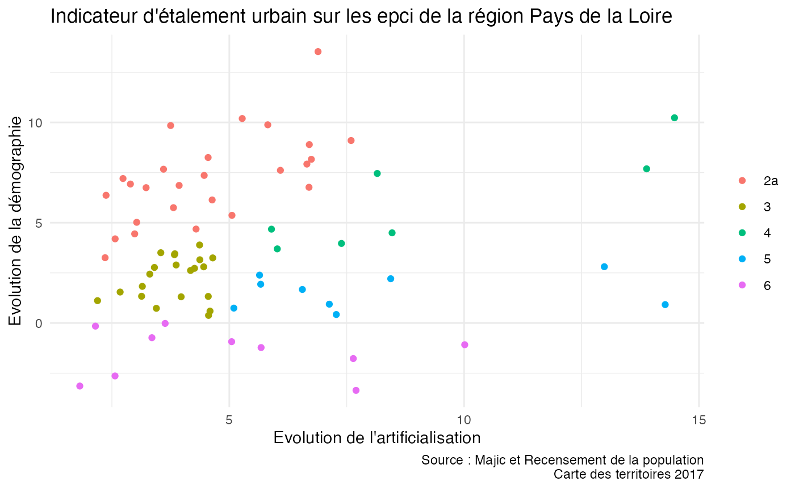
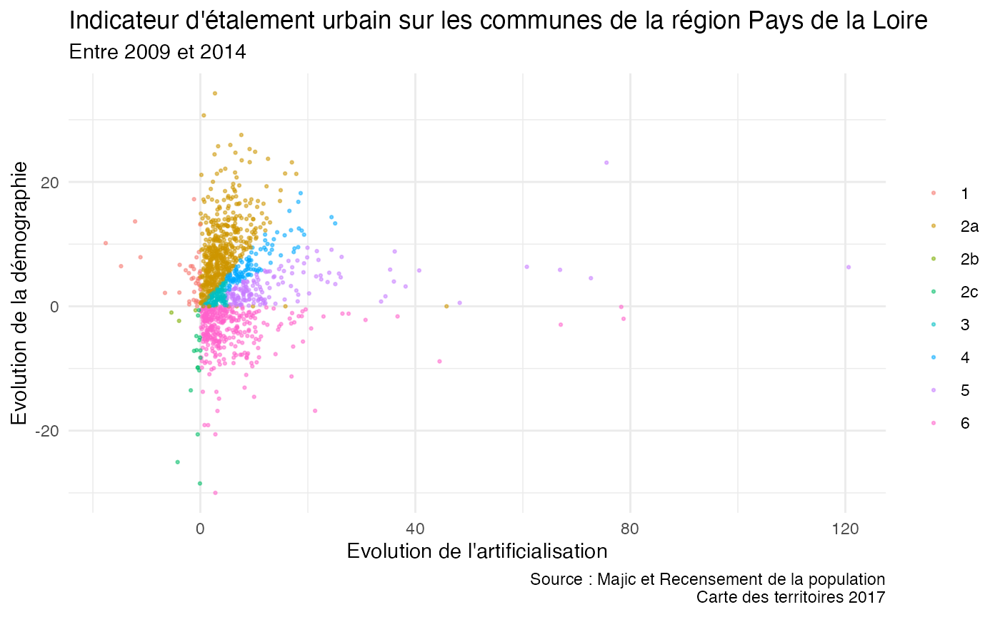

Exercices parcours R module 2 : datapréparation
Source:vignettes/exercices_module_datapreparation_R.Rmd
exercices_module_datapreparation_R.Rmd
library(savoirfR)
#> Warning: replacing previous import 'stats::filter' by 'dplyr::filter' when
#> loading 'savoirfR'Exercice 1 : Les données mensuelles sitadel (chap 5.5.2)
À partir du fichier sitadel de février 2017 (ROES_201702.xls), produire un dataframe ‘sit_pdl_ind’ contenant pour la région Pays-de-la-Loire (code région 52), pour chaque mois et pour les logements individuels (définis par la somme des logements individuels purs et individuels groupés : i_AUT = ip_AUT + ig_AUT) :
- le cumul des autorisations sur 12 mois glissants (i_AUT_cum12),
- le taux d’évolution du cumul sur 12 mois (i_AUT_cum_evo, en %),
- la part de ce cumul dans celui de l’ensemble des logements autorisés (log_AUT), en pourcentage.
Résultat attendu :
solution sans le pipe %>%
solution avec le pipe %>%
Aperçu de la solution 
Exercice 2 (chap 5.5.3)
Convertir les colonnes de la table exercice au format date (quand c’est pertinent). La table exercice est issue de FormationPreparationDesDonnees.RData.
Résultat attendu :
#> 'data.frame': 153497 obs. of 23 variables:
#> $ code_analyse : int 5186581 280131 1576225 799894 472800 2767140 4748701 1553898 6257072 4871710 ...
#> $ code_laboratoire : num NA 292 NA NA 292 NA NA NA NA NA ...
#> $ code_prelevement : int 37593 7715 15517 9566 8332 26792 35625 15378 41898 36326 ...
#> $ code_parametre : num 1216 1668 1185 1217 1907 ...
#> $ code_fraction_analysee: int 23 23 23 23 23 23 23 23 23 23 ...
#> $ resultat_analyse : num 0.007 0.05 0.04 0.05 0.26 0.02 0.01 0.02 0.014 0.02 ...
#> $ code_remarque : int 10 2 2 2 1 10 10 10 10 10 ...
#> $ limite_detection : num 0 0 0 0 0 0 0 0 0 0 ...
#> $ limite_quantification : num 0 0 0 0 0 0 0 0 0 0 ...
#> $ code_intervenant : Factor w/ 9 levels "44","49","53",..: NA 6 NA NA 6 NA NA 3 NA 1 ...
#> $ code_reseau : Factor w/ 3 levels "ARS","FREDON",..: 3 3 2 3 3 3 3 1 3 1 ...
#> $ code_station : chr "04153800" "04130000" "04132500" "04214000" ...
#> $ date_prelevement : Date, format: "2014-09-16" "2003-08-05" ...
#> $ code_support : int NA 3 NA NA 3 NA NA 3 NA 3 ...
#> $ libelle_station : chr "MOZEE à CHANTONNAY" "MAYENNE à DAON" "MAYENNE à MONTREUIL-JUIGNE" "CHERE à CHATEAUBRIANT" ...
#> $ date_creation : Date, format: "1900-01-01" "1900-01-01" ...
#> $ source : chr "AELB" "AELB" "AELB" "AELB" ...
#> $ code_masse_eau : chr "GR1950" "GR0460c" "GR0460c" "GR0121" ...
#> $ code_entite_hydro : chr "N3036200" "M---0090" "M---0090" "J78-0300" ...
#> $ code_troncon_hydro : chr "N3036200" "M3620090" "M3910090" "J7800300" ...
#> $ code_commune : chr "85051" "53089" "49214" "44036" ...
#> $ annee : num 2014 2003 2008 2007 2005 ...
#> $ date_formatee : chr "16/09/2014" "05/08/2003" "01/09/2008" "02/05/2007" ...Exercice 3 (chap 5.9.1)
A partir des données “sitadel” chargées dans l’exercice 1, effectuer les opérations suivantes en utilisant l’opérateur %>% :
- effectuer les mêmes calculs que ceux réalisés sur la région 52, mais sur chacune des régions –> à stocker dans ‘sit_ind’
- calculer les agrégations par année civile pour chacune des régions, puis leur taux d’évolution d’une année sur l’autre (exemple : (val2015-val2014)/val2014) –> à stocker dans ‘sit_annuel’
Résultat attendu :
Exercice 4 (chap 5.9.2)
Sur les données FormationPreparationDesDonnees.RData, table exercice :
1/ calculer le taux de quantification pour chaque molécule et chacune des années : chaque molécule est identifiée par son code_parametre, le taux de quantification est le nombre de fois qu’une molécule est retrouvée (càd si code_remarque = 1) sur le nombre de fois où elle a été cherchée (càd si code_remarque = 1, 2, 7 ou 10). Pour cela :
- créer la variable
annee - créer la variable de comptage des présences pour chaque analyse (1=présent, 0=absent)
- créer la variable de comptage des recherches pour chaque analyse (1=recherchée, 0=non recherchée)
- pour chaque combinaison
anneexcode_parametre, calculer le taux de quantification
2/ trouver pour chaque station, sur l’année 2016, le prélèvement pour lequel la concentration cumulée, toutes substances confondues, est la plus élevée (~ le prélèvement le plus pollué). Pour cela :
- filtrer les concentrations quantifiées (
code_remarque=1) et l’année 2016 - sommer les concentrations (
resultat_analyse) par combinaisoncode_stationxcode_prelevement - ne conserver que le prélèvement avec le concentration maximale
Résultat attendu :
Exercice 5 (chap 6.1)

Dans les données FormationPreparationDesDonnees.RData, chaque analyse est effectuée à partir d’un prélèvement, lui-même réalisé au niveau d’une station.
Reconstituer le dataframe
exercicequi rassemble les données contenues dans les tablesanalyse,prelevementetstationgrâce à des jointures.calculer le nombre d’analyses réalisées sur des molécules (identifiables par leur
code_parametre) et décrites dans le référentielparametre;produire une liste des
code_parametreassociés à des analyses mais absents du référentiel ;produire une table des analyses “orphelines”, c’est-à-dire qui correspondent à aucun prélèvement.
Résultat attendu :
#> [1] TRUEExercice 6 (chap 8)
Calculer à partir des tables fournies dans le fichier majic.RData issues des fichiers fonciers (cf. http://piece-jointe-carto.developpement-durable.gouv.fr/NAT004/DTerNP/html3/_ff_descriptif_tables_image.html#pnb10) un indicateur d’étalement urbain entre 2009 et 2014 à la commune et à l’EPCI sur la région Pays de la Loire (départements 44, 49, 53, 72 et 85), et catégoriser chaque territoire.
Définitions :
- artificialisation = dcnt07 + dcnt09 + dcnt10 + dcnt11 + dcnt12 + dcnt13
- indicateur_etalement_simple = évolution de l’artificialisation / évolution de la population
- indicateur_etalement_avance, indicateur catégoriel qui vaut :
- 1 si la population progresse ou reste stable alors que l’artificialisation recule ;
- 2a si la population et l’artificialisation progressent ou sont stables et l’étalement urbain est inférieur ou égal à 1 (ou pop stable) ;
- 2b si la population et l’artificialisation reculent et l’indicateur d’étalement urbain est supéreur à 1 ;
- 2c si la population recule et l’indicateur d’étalement est compris entre 0 et 1 (inclus) ;
- 3 si la population progresse, l’artificialisation progresse plus vite que la population, tout en restant inférieure ou égale à 4,9 m² ;
- 4 si la population progresse, l’artificialisation est supérieure à 4,9 m², elle progresse plus vite que la population mais au plus 2 fois plus vite ;
- 5 si la population progresse, l’artificialisation progresse plus de 2 fois plus vite que la population et est supérieure à 4,9 m² ;
- 6 si la population recule et l’indicateur d’étalement urbain est négatif.
- 1 si la population progresse ou reste stable alors que l’artificialisation recule ;
Résultat attendu :
